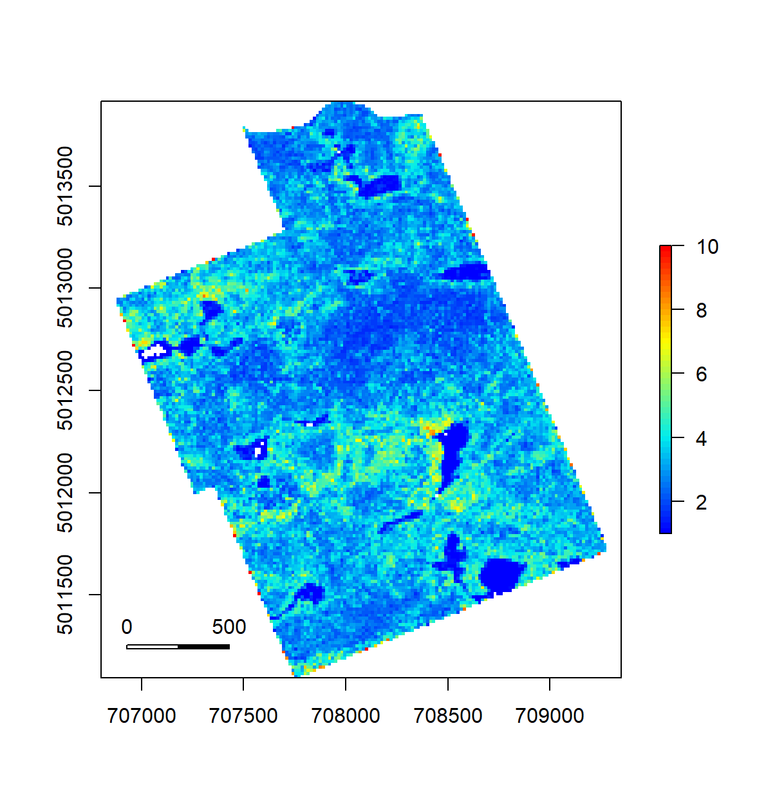

17 Thinking outside the box
We have presented many common processes through these tutorials. Most examples presented could have been done with other softwares, but what we have seen is only the tip of the lidR iceberg! In fact, lidR was never designed with common processes in mind, but instead to explore new ones and push innovation in this field. Some examples might be found here and there in the book. The following chapter presents some applications that are likely to be impossible to reproduce in other softwares, demonstrating how we can go from a novel idea to a fully functional tool using lidR.
17.1 New complex metrics in ABA
17.1.1 Distance between returns
In forestry, simple metrics can be derived from first returns. But what about metrics that estimate the average distance between first and last returns? Is is a valuable metric for characterizing of forest stucture? Can we refine the prediction? Nobody knows, but we can try.
First, we need to retrieve each emitted pulse and keep only the first and last point of each sequence excluding sequences with only one return.
las <- retrieve_pulses(las)
las <- filter_firstlast(las)
las <- filter_poi(las, NumberOfReturns > 1)Using the data.table syntax we can compute the distance between first and last returns for each pulse. It could be done with dplyr as well using group_by() %>% mutate() but we are proponent of using data.table().
At this stage our data set contains distances twice. 1 associated with the first return and 2 with the last return. We only need a single value, so lets keep only first returns. Some distances are NA and correspond to pulses at the very edge of the file. We can discard those case for the moment.
We can now plot the first returns colored by their distance to the last return.

Now we can compute the average in an ABA (see section 10).

Now we have a working method, we can extend the idea to apply it over a broad coverage using the LAScatalog processing engine – see section 14. First we create a function that does this job. This is not mandatory but factorizing the code is good practice.
grid_distance_first_last = function(las, res) {
las <- retrieve_pulses(las)
las <- filter_firstlast(las)
las <- filter_poi(las, NumberOfReturns > 1)
las@data[, d := Z[1]-Z[2], by = pulseID][]
las <- filter_first(las)
las <- filter_poi(las, !is.na(d))
return(grid_metrics(las, ~mean(d), res))
}Then we define a function that respects some requirement imposed by the LAScatalog processing engine.
my_routine <- function(chunk, res) {
bbox <- raster::extent(chunk)
las <- readLAS(chunk)
if (is.empty(las)) return(NULL)
metric <- grid_distance_first_last(las, res)
metric <- raster::crop(metric, bbox)
return(metric)
}To finish we use the LAScatalog processing engine with catalog_sapply(). We need to process with a buffer to avoid the case where pulses are separated in two files, so we use opt_chunk_buffer(ctg) <- 2. In addition, with the output being a raster, we ensure alignment of the chunk with the raster.
ctg <- readLAScatalog("folder/")
opt_chunk_buffer(ctg) <- 2
options <- list(raster_alignment = 15)
metrics <- catalog_sapply(ctg, my_routine, res = 15, .options = options)And we are done. Our innovative metric is computing with real-time monitoring. It can run in parallel on a single machine or in parallel on several machines. At the end, the output is a wall-to-wall raster map of the average distance between first and last returns for beams that return multiple returns. In 19 lines of code!
17.1.2 Rumple index
Another interesting metric that could be computed is the rumple index (see Kane et al. (2008)).
To compute a rumple index we can triangulate points, measure the surface created, and divide by the projected surface. Rumple index is however expected to measure surface roughness of the canopy and it doesn’t makes sense to triangulate every point. An option is to triangulate each first return but yet first returns are not all representative of the canopy. In the following example we are using the surface points every 1 m.
grid_rumple_index = function(las, res) { # user-defined function
las <- filter_surfacepoints(las, 1)
return(grid_metrics(las, ~rumple_index(X, Y, Z), res))
}Then the code is pretty much the same than in previous section
my_routine <- function(chunk, res) {
bbox <- raster::extent(chunk)
las <- readLAS(chunk)
if (is.empty(las)) return(NULL)
metric <- grid_rumple_index(las, res)
metric <- raster::crop(metric, bbox)
return(metric)
}
ctg <- readLAScatalog("folder/")
opt_chunk_buffer(ctg) <- 1
options <- list(raster_alignment = 20)
metrics <- catalog_sapply(ctg, my_routine, res = 20, .options = options)
plot(metrics, col = height.colors(50))
17.2 Multi-spectral coloring
We have already seen a multi-spectral coloring example in section 13.2.3. This is truly a good example of how to think outside the box with lidR, so we show several variants here. The goal is to use multi-spectral data to generate false coloring and see how false coloring may be used for further analyses.
Multi-spectral ALS data are sampled with 3 devices each emitting a different wavelength. The point cloud is usually provided in the form of 3 LAS files, each file corresponding to a spectral wavelength. No matter the actual wavelength, we can consider the first band as blue, the second as red, and the third as green, and thus consider that each point has a pure color.
f1 = "data/chap11/PR1107_c1_ar_c.laz"
f2 = "data/chap11/PR1107_c2_ar_c.laz"
f3 = "data/chap11/PR1107_c3_ar_c.laz"
las <- readMSLAS(f1, f2, f3, filter = "-keep_z_below 300")
plot(las, color = "ScannerChannel", size = 6)
Each channels returns vary in intensities as seen in the figure below because of the wavelength reflectance properties of the targets. A first step could be to normalize the intensities. For this example we won’t do that to keep things simple.
library(ggplot2)
ggplot(las@data) +
aes(x = Intensity, fill = as.factor(ScannerChannel)) +
geom_density(alpha = 0.5) +
theme_minimal() +
theme(legend.position = c(.9, .90),
legend.title = element_blank())
In this specific example, notice that only few intensities are above 255, So intensity ranges from 0 to almost 255. This is very convenient because we will be able to use the raw values as color without transformation. We will simply force values above 255 to be 255. This is a dirty solution but fair enough for the example which is not about intensity normalization.
To finish, we define a function that takes the intensities and the associated channel as inputs. This function decomposes the 3 channels, computes the average intensity of each channel, and returns these 3 values that will later be interpreted as RGB. Also if one color can is missing we force RGB to be NA.
colorize <- function(intensity, channel)
{
# Split the intensities of each channel
i1 = intensity[channel == 1L]
i2 = intensity[channel == 2L]
i3 = intensity[channel == 3L]
# If one channel is missing return RGB = NA
if (length(i1) == 0 | length(i2) == 0 | length(i3) == 0)
return(list(R = NA_integer_, G = NA_integer_, B = NA_integer_))
i1 = as.integer(mean(i1))
i2 = as.integer(mean(i2))
i3 = as.integer(mean(i3))
return(list(R = i1, G = i2, B = i3))
}Now we can use this function with different levels of regularization. We can use colorize() with grid_metrics() in an ABA. It returns a multi-layer raster that can be interpreted as RGB

We can also attribute an RGB color per voxel, discarding the voxels where RGB = NA by using colorize() with voxel_metrics() (see chapter 12).
rgb <- voxel_metrics(las, ~colorize(Intensity, ScannerChannel), 2)
rgb <- rgb[!is.na(R)] # Remove NAs
rgb <- LAS(rgb, las@header) # Convert to LAS for display
plot(rgb, color = "RGB", nbits = 8, size = 5)
To finish we can colorize() with point_metrics() (see chapter 13). This has the advantage of maintaining much more points compared to the voxel-based version and to preserve coordinates.
rgb = point_metrics(las, ~colorize(Intensity, ScannerChannel), r = 0.5)
las <- add_lasrgb(las, rgb$R, rgb$G, rgb$B)
colored <- filter_poi(las, !is.na(R)) # Remove NAs
plot(colored, color = "RGB", size = 4)